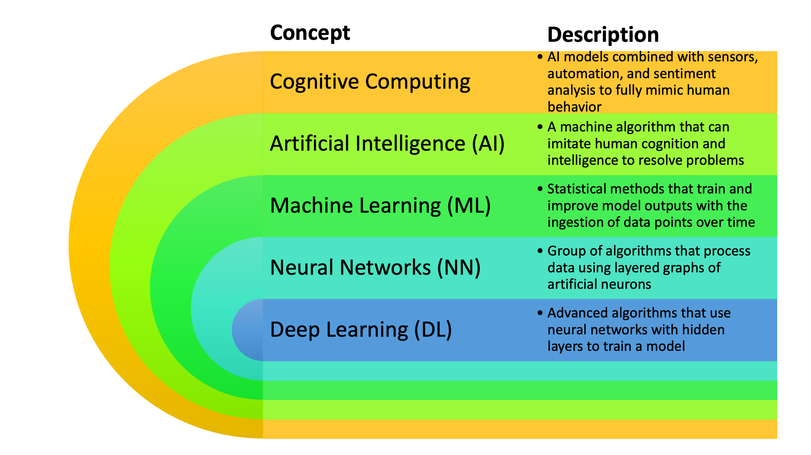
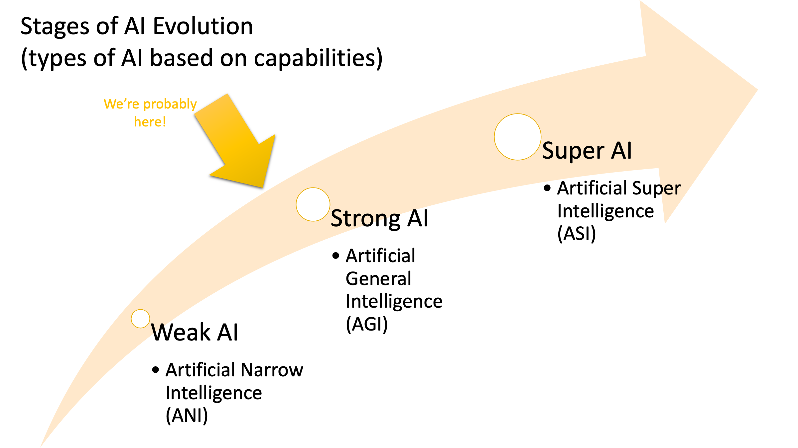
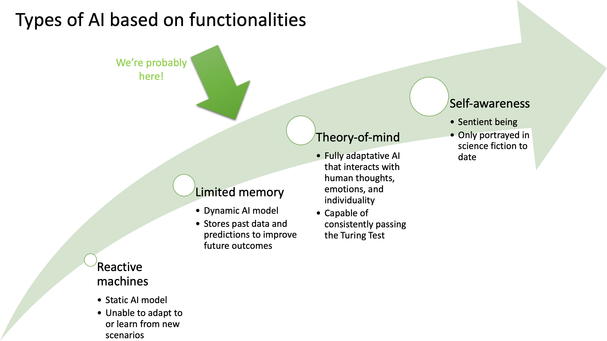
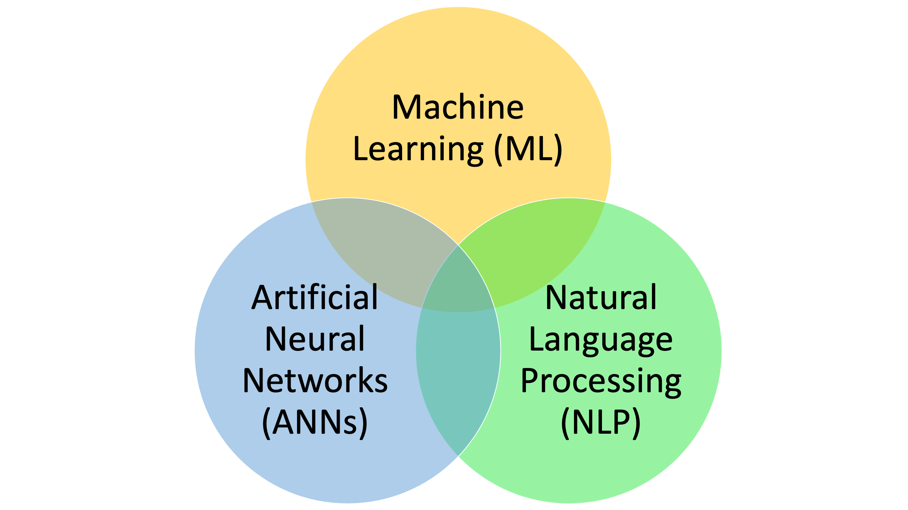
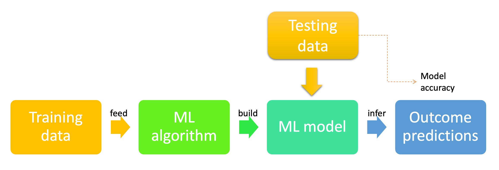
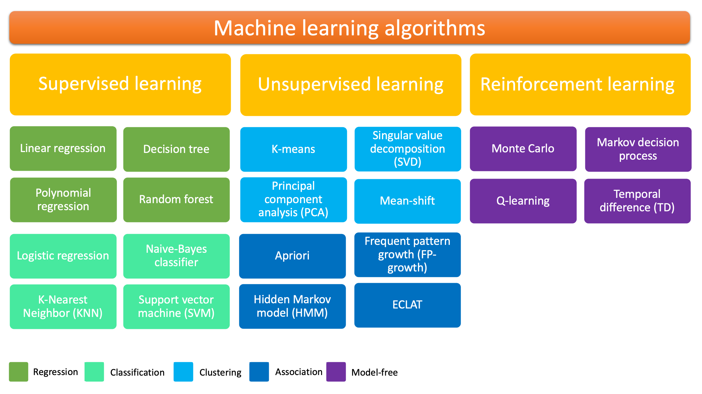
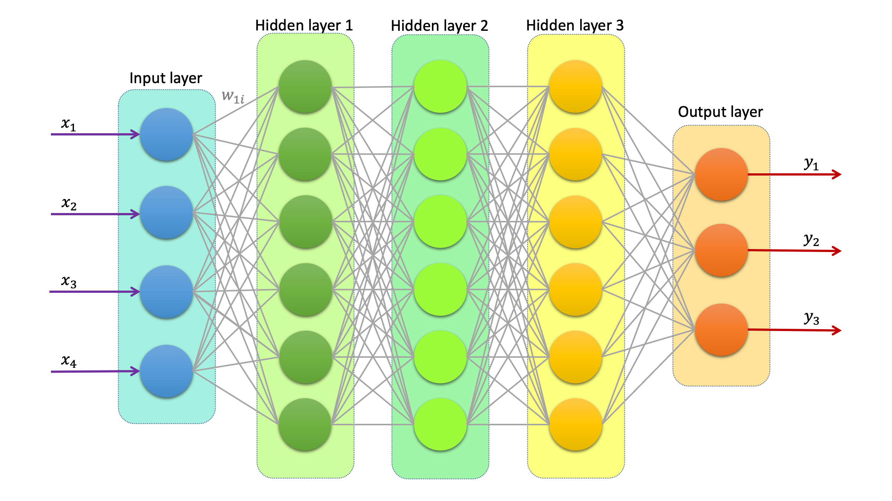
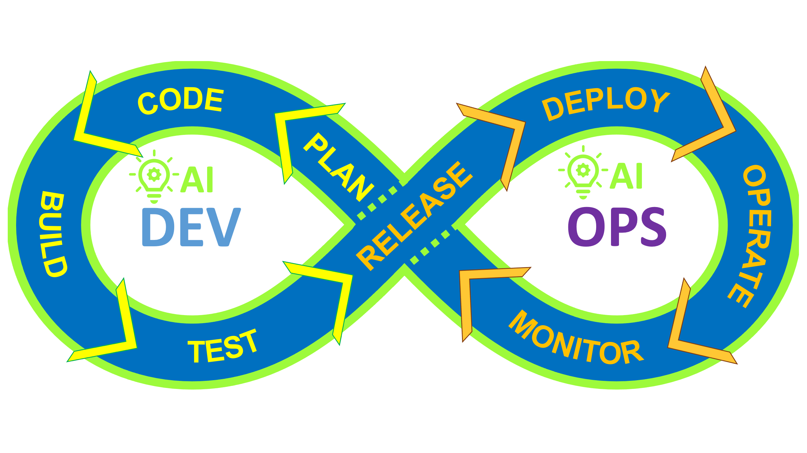
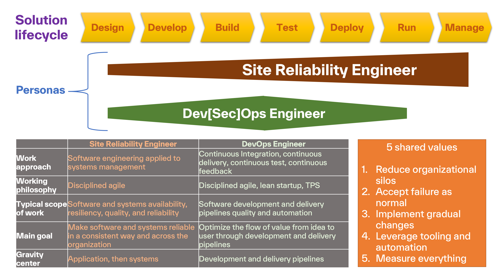
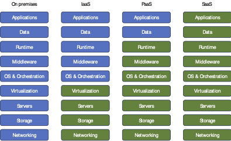

The SRE Manifesto
AI for DevOps and Site Reliability Engineering
Version: 2024-01
Chapter 01 - AI/ML Concepts and Applications
A lot has been said about Artificial Intelligence (AI) and Machine Learning (ML) after the rise of Generative AI (GenAI), especially with the popularity of ChatGPT, which is a Large Language Model (LLM). Many companies moved quickly to adopt AI in their products and solutions, training models to detect patterns and anomalies in user behavior and system data. GenAI became a new way to turn large datasets, often called data lakes, into useful insights.
Although the relationships among AI, ML, and LLM are intricate and evolving, more people consume AI/ML as a service without understanding how these systems work internally. This is good for the growth of AI adoption, but it is not ideal for engineers who are responsible for operating and maintaining AI-powered applications.
Site reliability engineers (SREs), platform engineers, and DevOps professionals often help deploy AI-based systems to hybrid and multi-cloud environments. Yet, the practical use of AI/ML in their engineering work still deserves more attention in the literature.
Throughout this book, we want to answer the following questions:
- What are the basic primitives of AI, ML, Deep Learning (DL), and cognitive computing from an engineering perspective?
- Which skills should SREs, platform engineers, and DevOps engineers develop to adopt AI in their organizations?
- Which AI and ML best practices are useful in operational and engineering work, and when should they not be used?
Important note: The technology industry often does not distinguish AI from ML for marketing purposes, and ML is frequently treated as a component of AI. In this book, we use the terms intentionally. When we want to be more general, we use the acronym AI. When we refer to both as separate but related concepts, we use the combined term AI/ML.
We begin by understanding the essential concepts behind AI, ML, and LLMs. Then, we discuss AI in DevSecOps and site reliability engineering, examine how cloud providers offer AI services, and close the chapter with a hands-on example showing how a simple ML model works under the hood.
In this chapter, we cover the following topics:
- AI versus ML versus cognitive computing
- AI applied to DevSecOps
- AI applied to site reliability engineering
- AI offered on the cloud
AI versus ML versus cognitive
The world of AI/ML is vast and old. Navigating it requires a clear understanding of the fundamental concepts and terminology. This section examines the main definitions, theories, models, categories, and algorithms behind AI and ML so that the rest of the book is easier to follow.
It is critical to distinguish AI, ML, and cognitive computing because they share concepts and also compete in different ways. To make this easier, we divide the subject into three views:
- The holistic view
- The AI view
- The ML view
The holistic view
In a simplified view, AI contains ML, and ML may include Deep Learning (DL). Cognitive computing contains AI, automation, and sensors. The diagram in Figure 1.1 shows the relationship between AI, ML, DL, and cognitive computing.

Figure 1.1 - The AI stack of hierarchical diagramAt the top of the stack is cognitive computing, where AI models, sensors, automation, and sentiment analysis interact with human beings. Many home appliances already embed cognitive features. Examples include Alexa and Siri.
Cognitive computing was once considered the apex of AI innovation through home robots and virtual assistants. After GenAI and LLMs, it became secondary and is often treated as a subset of the AI layer.
The next layer is AI, where we have far more machine capability than a simple set of algorithms. We can define AI as an interface to ML models and as an application that mimics human behavior. AI is also one of the oldest areas of study in computer science. Researchers have long tried to build machines capable of making predictions using statistical methods. The most basic AI task is to classify datasets according to their features. For example, an AI model can determine whether a picture was taken during the day or at night based on the values in the RGB color matrix. Another example is predicting the likelihood of a service disruption based on recent captured events.
Following AI is ML, an approach for creating AI models by discovering hidden patterns and rules from large datasets, also known as training data. After enough data is provided to teach the algorithm, the model can predict outcomes on similar data by applying learned rules and insights from the training phase. We call the result a machine learning model: a set of rules and data labels selected and calibrated by an ML algorithm.
After statistical methods became common, scientists started using artificial neural networks inspired by the human brain. A neural network (NN) imitates a biological network by receiving inputs or signals, processing them through linked artificial neurons, and producing outputs. Each neuron has parameters and may use different algorithms to process information.
The application of neural networks to machine learning is called deep learning, which is the last layer of this stack. It is called deep because there are hidden layers of neurons in the middle of the network, and the algorithm calculates their parameters without exposing them externally.
Important note: This book focuses on AI and ML, because those are the fields most relevant to engineering problems. Most research today is happening at the DL level, which is the core of modern AI models. However, deep learning frontiers are beyond the scope of this book.
Now that we have an overview of the terminology, let's look at AI in more detail.
The artificial-intelligence view
We can describe artificial intelligence as a simulation of human intelligence using heuristics. In this definition, simulation refers to software-based or algorithm-based techniques, while heuristics means using approximations of reality. This implies that AI systems require substantial computational power and memory, and no model will predict the correct answer 100% of the time.
The evolution of AI
Since 2022, AI has become mainstream again with ChatGPT. However, AI has been evolving since the early 1950s. We can divide current AI models into three evolutionary stages:
- Weak AI
- Strong AI
- Super AI

Figure 1.2 - Stages of AI evolution ladderWeak AI, also called Artificial Narrow Intelligence (ANI), is the application of reactive or limited AI to solve a specific problem domain. AI systems inside video games are a good example. Other examples include computer-controlled chess players and recommendation systems on streaming platforms that learn a user's preferences.
Strong AI, also called Artificial General Intelligence (AGI), is a stage where AI can adapt and learn on the fly with human-like capabilities. It would possess flexible models and advanced algorithms that can solve problems without human intervention. In practice, this remains largely theoretical. Even self-driving cars and autonomous surgical robots are not considered full AGI.
Super AI, also known as Artificial Super Intelligence (ASI), is a hypothetical stage where AI surpasses humans in learning, reasoning, and perception. Many experts believe this may happen eventually, but this debate is beyond the scope of this book.
The types of AI
Another way to categorize AI systems is by function. Using that approach, we have the following types:
- Reactive machines
- Limited memory
- Theory-of-mind
- Self-awareness

Figure 1.3 - Types of AI based on functionalityReactive machines, or reactive AI, cannot learn from mistakes and are considered static models. They cannot adapt to unexplored situations. For example, IBM Deep Blue, a chess-playing supercomputer, defeated Garry Kasparov in 1996. While impressive, it could not learn further or improve its strategy.
Limited memory systems are capable of learning by storing past data and predictions to improve future outcomes. They usually rely on continuous learning cycles where an external entity validates their predictions. Driverless cars, IBM Watson, and ChatGPT fit this category.
Theory-of-mind is the next leap in AI capability. In psychology, this refers to the ability to understand others' mental states, including beliefs, desires, emotions, intentions, and thoughts. AI systems in this category would interact with humans at a deeper level, adapting to their emotions and possibly passing the Turing Test consistently. Examples exist mostly in fiction and research prototypes, such as Sophia and Kismet.
Important information: The Turing Test, originally called the imitation game, was invented by Alan Turing in 1950. It is used to determine whether a machine can exhibit human-like intelligent behavior.
The last category of AI is self-awareness. Systems in this class possess consciousness and recognize humans as sentient beings. We are still uncertain whether AI will ever reach this level. Examples are fictional characters such as Data from Star Trek and the Cylons from Battlestar Galactica.
The components of AI
In a simplified diagram, the main components of current AI systems are shown in Figure 1.4.

Figure 1.4 - The standard components of AI modelsAccording to Arthur Samuel, machine learning is "the field of study that gives computers the ability to learn without being explicitly programmed." It can be seen as a subset of AI responsible for creating models from ingested data so those models can later predict outcomes.
Natural Language Processing (NLP) is an AI component that allows machines to understand text and speak like humans. Software with speech generation or speech-to-text capabilities is an example of this component.
Artificial Neural Networks (ANNs), also called neural networks, emulate a network of neurons similar to the processing mechanism inside the human brain. These are central to deep learning algorithms.
Since ML and DL are key subsets of AI, we discuss them next.
The machine-learning view
Tom M. Mitchell gave a more precise definition of machine learning: "A computer program is said to learn from experience E with respect to some class of tasks T and performance measure P, if its performance at tasks in T, as measured by P, improves with experience E."
We can interpret E as the experience of playing a soccer video game, T as the task of playing that game with a specific team, and P as the probability of winning against a human opponent.
In other words, machine learning allows computers to solve specific problems by learning from data and making decisions. So how does a machine improve with experience?
It is all about data. Figure 1.5 shows a condensed view of how ML works.

Figure 1.5 - The ML generic flowAn ML algorithm ingests data, usually called the training dataset. This algorithm detects patterns and insights in large amounts of data, a task that would be impossible for most humans. Then it creates a model from that dataset that can predict future values or infer results for new data. This process is called training. In general, the better the training data, the more accurate the model becomes.
After the model is trained, we feed testing data, also called validation data, to measure its precision. Since we know the correct answers in the test dataset, we can compare the predicted values with the actual ground truth and evaluate the model's accuracy.
For example, an ML algorithm can learn from many images of handwritten digits from 0 to 9. Once trained, the model receives a new image and predicts which digit it represents. This is called Optical Character Recognition (OCR).
Methods or techniques
A computer program can learn to solve a problem using one of three learning techniques:
- Supervised learning
- Unsupervised learning
- Reinforcement learning
Supervised learning
Supervised learning applies training data paired with expected outcomes. We assign a label to each data point, telling the algorithm what the correct result is for a given input.
Imagine we are building an ML model to classify products as acceptable or defective by analyzing thermal images. Each image has features such as average temperature, dimensions, fissures, and hot/cold areas. We train the model on labeled examples of acceptable and defective products. The algorithm learns the relationship between product features and the expected outcome.
Unsupervised learning
Unsupervised learning is used when we do not know what the result should look like. The training data has no labels, and the algorithm must find the structure in the data without guidance.
For example, imagine you receive thousands of movie synopses and need to group them by similarity based on features such as year, duration, director, production studio, lead actors, and soundtrack producer. The labels must be derived from the data itself. This is a classic unsupervised learning problem.
Reinforcement learning
Reinforcement learning is a more advanced method in which an ML algorithm acts as an agent in an environment. During training, the agent interacts with its environment and receives rewards or penalties based on its actions. It learns by exploring actions and exploiting known successful strategies. Examples of reinforcement learning include self-driving cars and robots such as Atlas from Boston Dynamics.
Problem domains
ML is not suitable for all types of problems. For instance, many ML methods require feature extraction, which is a manual process. Also, algorithm complexity grows with the number of features, making ML less practical for high-dimensional problems.
With that in mind, ML can be used to solve the following problem domains:
- Regression: The output is a continuous value. We predict a numeric result based on the inputs. An example is predicting the minimum braking distance of a vehicle using speed, terrain, and reaction time.
- Classification: The output is a discrete value such as a category. The goal is to assign labels to data points. For example, triaging medical patients as severe, mild, or healthy.
- Clustering: The goal is to group data points by similarity. Recommending a new movie based on a user's history is a common example.
Algorithms
Another critical aspect of ML is its algorithms. Advanced AI systems often combine several ML algorithms in their workflows. A wide range of algorithms exists, and new ones are created frequently.

Figure 1.6 - The well-known ML algorithms tableThis table is split into three columns, one for each machine-learning paradigm. Different colors highlight different algorithm families. The universe of ML algorithms is far larger than any single table can show.
Deep learning
Deep learning is the intersection of machine learning and artificial neural networks (ANNs). ANNs are meshes of artificial neurons, known as perceptrons or nodes. Like a human neuron, a perceptron receives multiple input signals, applies statistical transformations and functions, and emits an output.
A deep neural network contains multiple perceptrons arranged in layers. The network is called deep because it has hidden layers between the input and output layers. Figure 1.7 shows a schematic deep neural network.

Figure 1.7 - A deep neural network diagramA deep neural network has one input layer, which receives the data, and one output layer, which produces the result. In between are several hidden layers. A perceptron in one layer is connected to nodes in the next layer. Each connection has a weight that determines how important an input is to the next node. Each node also has an activation function: a mathematical formula that converts inputs and weights into an output value.
In addition, a bias term is added to the weighted sum. This helps shift the activation function toward positive or negative values and accelerates calibration during training.
Consider a travel system where the inputs are origin city, destination city, departure date, and airline, and the outputs are airfare, airport taxes, and best travel time. A deep learning model can estimate these outputs after training. Training a neural network is challenging because it requires large amounts of data and computing power.
The process starts by feeding the data through the network. Because the initial weights are random, the first predictions are usually wrong. We adjust the weights using optimization techniques such as gradient descent to minimize prediction error. Through many iterations, the model gradually learns the correct mapping and becomes capable of predicting outputs for new data points.
Important note: Adjusting weights is part of parameter optimization in neural networks. The process is often done through backpropagation. Hyperparameters such as the number of layers, features, and activation functions are also set manually. The training process is a deeper topic and is often associated with data engineering work.
There are three major types of deep neural networks:
- Multilayer Perceptrons (MLPs): basic deep networks used as building blocks for many modern pipelines
- Convolutional Neural Networks (CNNs): primarily used for image classification, detection, and recognition
- Recurrent Neural Networks (RNNs): well suited to speech recognition, time series prediction, and natural language tasks
Important note: Deep learning is data-driven rather than rule-driven. As Tarah Wheeler notes, we cannot fully trust a deep learning model because the algorithm recalculates weights in hidden layers as it ingests new data. In many cases, it is difficult to explain precisely how a model reached a specific output.
Generative AI
Generative AI (GenAI) is the intersection of deep learning and natural language processing. The idea is to train models on natural language and other data to generate human-like text, answer questions, or create images, music, software code, and other forms of content.
While GenAI is a broad concept, LLMs are a subset of it. An LLM can accept a prompt and generate coherent, relevant text. Such models often rely on attention mechanisms, transformers, and deep neural networks.
We compare LLMs by their parameter counts. This includes weights and biases, training data size, vocabulary size, and other characteristics. Parameter counts range from billions to trillions.
Machine-learning bias
Model bias is a machine learning phenomenon where the results of an algorithm are systematically skewed toward or against a certain view. It is a type of systematic error caused by incorrect assumptions in the training process. Bias can be seen as the difference between the average model prediction and the correct answer.
Bias is a reminder that AI/ML is based on heuristics and approximations. AI systems can and will fail under certain conditions.
After this introductory section, you should have a solid understanding of AI and ML theory. Next, we look at how these concepts apply to IT engineering.
AI applied to DevSecOps
DevSecOps, or simply DevOps, is a philosophy of work that transformed software engineering. With its mantra, "you build it, you run it," DevOps became a de facto standard for software development processes. It is a shift-right approach that brings development and operations together, making developers responsible for the infrastructure that supports their software. Over time, security was added to the acronym to emphasize the importance of security teams across the entire lifecycle.
Important note: Throughout this book, we use DevOps and DevSecOps interchangeably. Although many Dev[X]Ops variants exist, DevOps is broad enough to address most enterprise software engineering needs.
The DevOps movement is often represented with an infinite symbol, as shown in Figure 1.8.

Figure 1.8 - The DevOps infinite symbol with AIThe core of DevOps is the Continuous Integration/Continuous Deployment (CI/CD) pipeline. This is the continuous flow of software design, development, build, testing, release, deployment, operation, and monitoring. Applying AI to DevOps has many implications, and there are several different lenses to consider.
For this discussion, we separate the topic into two process groups:
- Continuous integration
- Continuous delivery
Continuous integration
Under continuous integration (CI), DevOps engineers plan new features, fixes, and technical debt refactoring. They assist developers with coding and support their IDE environment. They also develop automation to keep code commits flowing into build, unit-test, and integration-test pipelines. They define test cases and build scripts for quality assurance, including load tests, security fuzzing, and user acceptance testing (UAT).
AI can help in many of these workflows. In the planning phase, ML can cluster similar stories and technical debt items to reveal common patterns and shared solutions. GenAI can suggest algorithms and implementation approaches during coding and development. ML can also help decide whether a software test was successful and support automation of test cases. AI can also be used to run penetration tests against software products.
Continuous delivery
The other half of DevOps is called continuous delivery (CD). In this context, DevOps engineers manage release workflows, including deploying new versions to pre-production and production environments. After deployment, they monitor the service to ensure it behaves as expected. Techniques such as blue-green deployments, canary releases, and A/B testing are common in CD.
Again, AI can help. In release management, an ML model can infer a quality scorecard for a new release based on test results, static code analysis, dependency analysis, instrumentation, and vulnerability scanning. GenAI can complement the report with a narrative summary of the findings.
For the deployment process, AI/ML can help prioritize where to deploy software based on cost, reliability, and service requirements. An engineer might spend hours comparing cloud providers and pricing models. An AI model with limited memory can support that decision-making process by analyzing historical patterns and constraints.
GenAI can also generate release documentation from code comments and implementation notes. In the same way, a trained DL model can recommend automation scripts for recurring maintenance tasks.
We do not want to be exhaustive here. But if we look at regression, classification, clustering, and content generation, many DevSecOps tasks naturally fit into those problem categories. The real question may be: which DevSecOps workloads do not fit those patterns in some way?
We go deeper into this topic in Part 2 of the book, where we focus on applying AI to DevOps and DevSecOps.
AI applied to site reliability engineering
Site reliability engineering celebrated its 20th anniversary in 2023. When Google exposed this philosophy to the world through its books, many companies started to adopt site reliability principles and practices into their engineering processes. Google also created one of the earliest AI applications in the famous PageRank algorithm used in its Search Engine Optimization (SEO) tools. Although PageRank is not a formal ML model, it is often recognized as a basic unsupervised learning technique.
SRE differs from DevOps in important ways. Instead of a shift-right transformation, SRE is a shift-left approach where software engineering principles are applied to solve operational problems. SREs and DevOps engineers work together to accelerate delivery time while improving reliability.

Figure 1.9 - The commonalities and differences between SREs and DevOps engineersSREs and DevOps engineers share common values and frameworks, but SREs usually work across a broader operational surface, including hybrid cloud environments and production systems. They aim to improve observability, reduce toil, design automation, and improve incident response and postmortem culture.
We can apply AI to site reliability engineering from multiple perspectives. For this introductory chapter, we divide the topic into these areas:
- Observability
- Automation
- Incident response
- Blameless postmortems
- Platform engineering
Observability
The core idea of observability is to make a system's internal state visible through telemetry and monitoring. Imagine every IoT device, service, server, virtual machine, wearable, and container producing monitoring data. Humans cannot make sense of all this data by themselves. For this reason, monitoring tools have incorporated AI/ML techniques for years. AIOps (AI for IT Operations) emerged from this need to classify and correlate large amounts of observability data.
Automation
One of the most exciting uses of AI is the recommender system that tells SREs what to automate next. For example, an ML model can detect toil in incident records, problem tickets, or change history. When combined with GenAI, it can generate a draft automation script from that analysis.
Incident response
SREs can use a GenAI chatbot to receive detailed information about system status and an estimate of likely root causes. The same chatbot can trigger automation workflows to remediate the problem once an engineer confirms the diagnosis. In more advanced scenarios, trained ML models can perform self-healing actions for common incidents.
Blameless postmortems
Another key SRE activity is performing postmortems after significant incidents. The purpose is not to assign blame, but to understand what failed and how to make the system more resilient. Even when AI models help identify root causes, they may fail in unprecedented scenarios. It is essential to remember the limitations of AI and continue improving the models using lessons learned from incident reviews.
Platform engineering
Platform engineering is a subset of site reliability engineering. It focuses on CI/CD platforms and the infrastructure services delivered to developers and engineers. It makes system creation, pipelines, automation, clusters, components, and integrations easier to manage. All the AI/ML applications discussed for DevOps are relevant to platform engineering as well.
We go deeper into this theme in Part 3 of the book, where we focus on AI in platform and site reliability engineering.
AI offered on the cloud
So far, we have been discussing AI applications in the abstract: what they do and why they are useful. But AI/ML solutions require compute resources, storage, and often specialized hardware such as GPUs and FPGAs. Training and operating these systems also require expertise.
For most organizations, it is easier to outsource the difficult components to an AI/ML-as-a-service model offered by hyperscalers.

Figure 1.10 - The differences among cloud adoption models
There are several cloud adoption models, and the amount of management responsibility varies significantly:
- On-premise: full control over the AI platform, but high operational overhead
- IaaS: infrastructure is outsourced, but you still manage much of the platform
- PaaS: you control the model and data platform, while the vendor manages the underlying platform
- SaaS: you consume a vendor-managed service and usually have limited control over the underlying model
In a SaaS solution, you usually have no control over the underlying AI/ML models. You just consume the service provided by the vendor. This is common for observability, automation, or incident response systems.
In a PaaS solution, you have control of the AI/ML platform and can create and train your own models on private data without managing the full infrastructure.
In both IaaS and on-premise solutions, you retain more control, but you also assume greater operational burden. A cloud hyperscaler can provide a flexible approach where some systems run as SaaS, some as PaaS, and some as IaaS.
There are cases where it makes economic sense to bring AI/ML ownership in-house. This usually happens when the organization depends on a large AI/ML platform for a critical business application. In those cases, the AIOps platform may share infrastructure and expertise with the larger system.
Often, organizations choose a hybrid-cloud model where some services run locally on orchestration platforms such as Kubernetes or OpenShift, while others are pure SaaS solutions.
In future chapters, we will cover examples of AIOps and AI/ML services on different cloud hyperscalers.
Summary
This chapter explored the foundations of cognitive computing, artificial intelligence, machine learning, and deep learning. We also examined why deep neural networks are central to generative AI and advanced ML models. Then we looked at practical applications for DevOps and site reliability engineers, discussed why cloud environments are a natural home for AI/ML workloads, and ran a simple linear regression experiment in the lab.
By now, you should be able to:
- Explain the major AI stages by capability and functionality
- Understand the terminology used in AI/ML work
- Describe the main machine learning paradigms and common algorithms
- Articulate where AI/ML can help in DevSecOps and SRE work
- Understand why cloud platforms are often a natural place to run AI/ML workloads
- Build a basic Python ML model and evaluate its accuracy
The next chapter discusses large-scale AI adoption strategies, practices, and governance models.
Further reading
You can expand your knowledge of AI/ML in many directions. Here are a few valuable references:
- Edureka: Artificial Intelligence with Python - https://www.edureka.co/blog/artificial-intelligence-with-python/
- Google Cloud TensorFlow Hello World tutorial - https://developers.google.com/codelabs/tensorflow-1-helloworld
- Coursera - Machine Learning by Andrew Ng - https://www.coursera.org/learn/machine-learning
- DigitalOcean - Python scikit-learn tutorial - https://www.digitalocean.com/community/tutorials/python-scikit-learn-tutorial